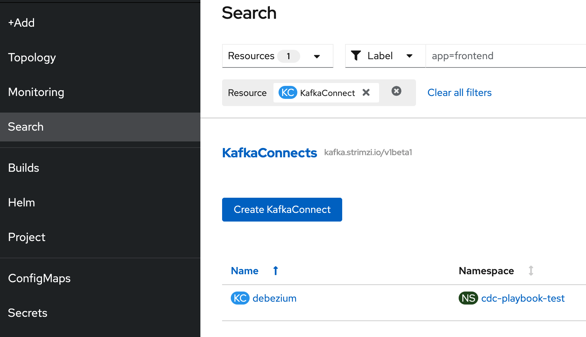
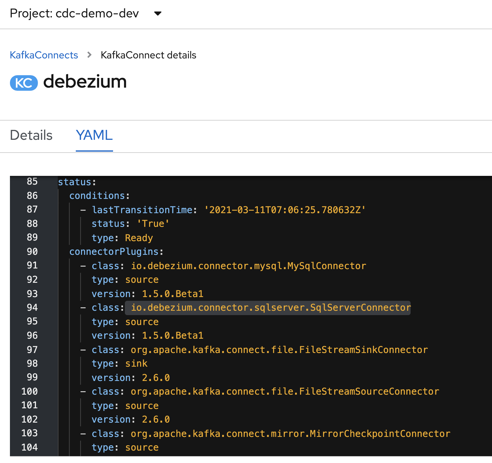
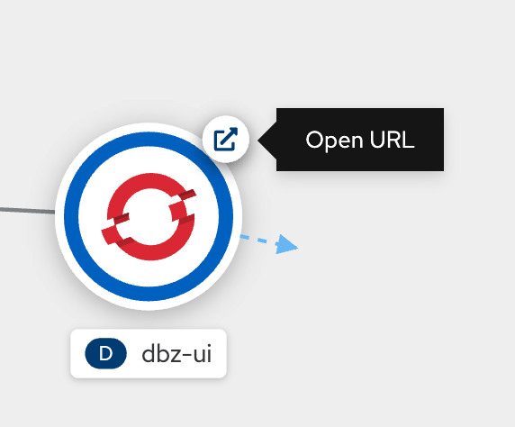
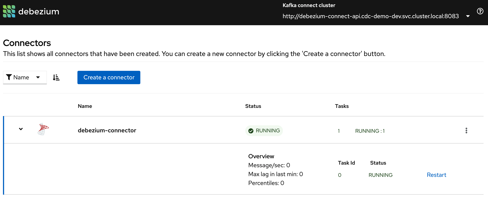
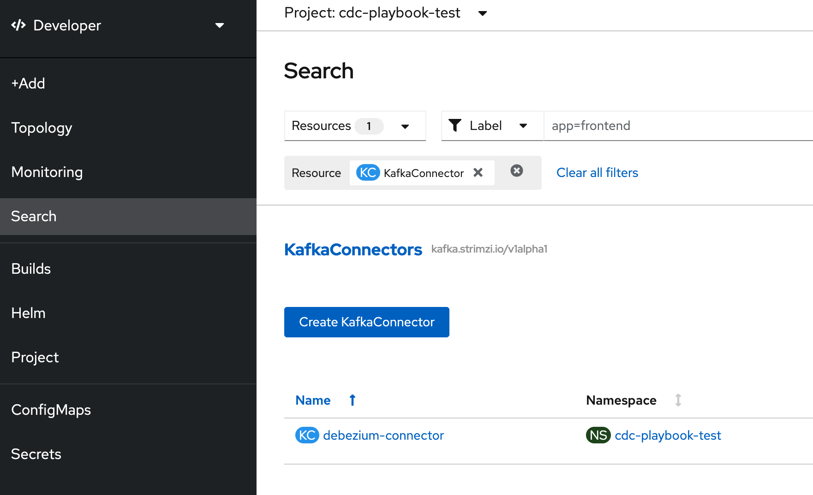
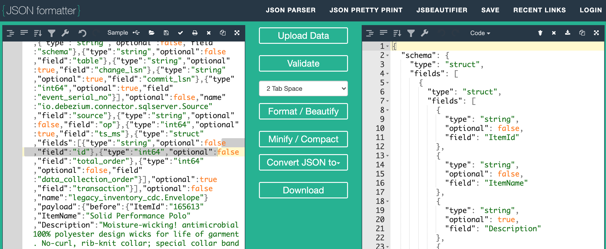
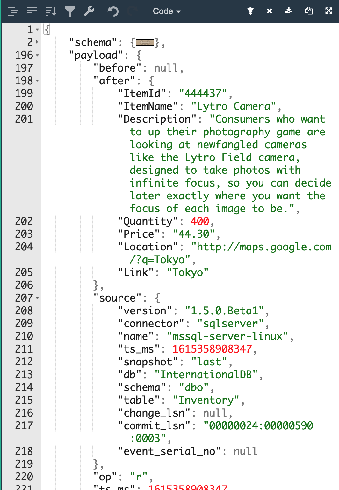

Demo Walkthrough
Legacy App Change Data Capture
In this section we’re going to put all the pieces together and demonstrate the ability to have our website updated based on debezium and a consumer that we write. This is the general plan:
-
Remember that we’ve already uploaded a number of items and quantities into the inventory via the legacy app

-
Go to the
cdc-demo-devproject, Developer Perspective -
First we will deploy the Strimzi-ified KafkaConnect and Debezium Connector for our application. Show them briefly this playbook:
--- - name: Create Namespace for Debezium Connectors k8s: api_version: v1 kind: Namespace name: '{{ dbz_project }}' state: present - name: Deploy Debezium Kafka Connect k8s: state: present namespace: '{{ dbz_project }}' resource_definition: "{{ lookup('template', 'kafka-connect.yaml.j2') }}" vars: kc_name: debezium connectors_image: '{{ debezium_connectors_image }}' - name: Deploy MSSQL Server Connector k8s: state: present namespace: '{{ dbz_project }}' resource_definition: "{{ lookup('template', 'kafka-connector-mssql.yaml.j2') }}" - name: Deploy Debezium UI Services k8s: state: present namespace: '{{ dbz_project }}' resource_definition: "{{ lookup('template', 'dbz-ui/debezium-ui-services.yaml.j2') }}" - name: Wait for Route k8s_info: kind: Route api_version: route.openshift.io/v1 name: dbz-ui namespace: '{{ dbz_project }}' register: dbz_ui_route until: >- (dbz_ui_route.resources is defined) and (dbz_ui_route.resources|length>0) and (dbz_ui_route.resources[0].spec.host is defined) - name: Deploy Debezium UI k8s: state: present namespace: '{{ dbz_project }}' resource_definition: "{{ lookup('template', 'dbz-ui/debezium-ui.yaml.j2') }}" vars: ui_public_host: '{{ item }}' loop: "{{ dbz_ui_route | json_query('resources[*].spec.host') }}" -
To deploy the playbook, run the following in the shell
ansible-playbook -i ${DEMO_HOME}/ansible/demo/inventory \ ${DEMO_HOME}/ansible/demo/main.yaml \ -e "ACTION=debezium_create" -
From the Developer Perspective, the elements appear and try to match them to the playbook logs.
-
Wait for the dbz-ui to appear indicating the end of the playbook
-
Search for the KafkaConnect for
debeziumas shown: -
Review the yaml (see below for example from playbook) NOTE: You may need to wait a while until the connector is in a
readystate before you see the status appear. You can wait either on the Topology page or on the CR page-
Point out all the possible connectors that can be registered within this connect (for all the different databases)

-
-
Back in the Topology View, click on the link badge of the
dbz-uiand show the visualization of the debezium connector: -
Search for the
KafkaConnectorand click on thedebezium-connector
-
Review the YAML (see below for example from playbook)
-
Point out the legacy topic we want to watch
apiVersion: kafka.strimzi.io/v1alpha1 kind: KafkaConnector metadata: name: debezium-connector labels: strimzi.io/cluster: debezium spec: class: io.debezium.connector.sqlserver.SqlServerConnector tasksMax: 1 config: database.hostname: "mssql-server-linux.{{ db_project }}.svc.cluster.local" connector.class: "io.debezium.connector.sqlserver.SqlServerConnector" database.port: "1433" database.user: "sa" database.password: "Password!" database.dbname: "InternationalDB" database.server.name: "mssql-server-linux" table.whitelist: "dbo.Inventory" transforms: Reroute transforms.Reroute.type: "io.debezium.transforms.ByLogicalTableRouter" transforms.Reroute.topic.regex: "(.*)Inventory(.*)" transforms.Reroute.topic.replacement: "{{ cdc_topic }}" database.history.kafka.bootstrap.servers: "demo-kafka-bootstrap:9092" database.history.kafka.topic: "dbhistory.internationaldb"
-
-
Now let’s watch that legacy topic that we see in the connector. We’d expect there should be data there for the one row we added to the legacy database
-
After a few moments, a blob of JSON should appear that looks something like the following (just unformatted):
{ "schema": { "type": "struct", "fields": [ { "type": "struct", "fields": [ { "type": "string", "optional": false, "field": "ItemId" }, { "type": "string", "optional": false, "field": "ItemName" }, { "type": "string", "optional": true, "field": "Description" }, { "type": "int32", "optional": false, "field": "Quantity" }, { "type": "string", "optional": false, "field": "Price" }, { "type": "string", "optional": false, "field": "Location" }, { "type": "string", "optional": false, "field": "Link" } ], "optional": true, "name": "legacy_inventory_cdc.Value", "field": "before" }, { "type": "struct", "fields": [ { "type": "string", "optional": false, "field": "ItemId" }, { "type": "string", "optional": false, "field": "ItemName" }, { "type": "string", "optional": true, "field": "Description" }, { "type": "int32", "optional": false, "field": "Quantity" }, { "type": "string", "optional": false, "field": "Price" }, { "type": "string", "optional": false, "field": "Location" }, { "type": "string", "optional": false, "field": "Link" } ], "optional": true, "name": "legacy_inventory_cdc.Value", "field": "after" }, { "type": "struct", "fields": [ { "type": "string", "optional": false, "field": "version" }, { "type": "string", "optional": false, "field": "connector" }, { "type": "string", "optional": false, "field": "name" }, { "type": "int64", "optional": false, "field": "ts_ms" }, { "type": "string", "optional": true, "name": "io.debezium.data.Enum", "version": 1, "parameters": { "allowed": "true,last,false" }, "default": "false", "field": "snapshot" }, { "type": "string", "optional": false, "field": "db" }, { "type": "string", "optional": false, "field": "schema" }, { "type": "string", "optional": false, "field": "table" }, { "type": "string", "optional": true, "field": "change_lsn" }, { "type": "string", "optional": true, "field": "commit_lsn" }, { "type": "int64", "optional": true, "field": "event_serial_no" } ], "optional": false, "name": "io.debezium.connector.sqlserver.Source", "field": "source" }, { "type": "string", "optional": false, "field": "op" }, { "type": "int64", "optional": true, "field": "ts_ms" }, { "type": "struct", "fields": [ { "type": "string", "optional": false, "field": "id" }, { "type": "int64", "optional": false, "field": "total_order" }, { "type": "int64", "optional": false, "field": "data_collection_order" } ], "optional": true, "field": "transaction" } ], "optional": false, "name": "legacy_inventory_cdc.Envelope" }, "payload": { "before": null, "after": { "ItemId": "444437", "ItemName": "Lytro Camera", "Description": "Consumers who want to up their photography game are looking at newfangled cameras like the Lytro Field camera, designed to take photos with infinite focus, so you can decide later exactly where you want the focus of each image to be.", "Quantity": 400, "Price": "44.30", "Location": "http://maps.google.com/?q=Tokyo", "Link": "Tokyo" }, "source": { "version": "1.5.0.Beta1", "connector": "sqlserver", "name": "mssql-server-linux", "ts_ms": 1615358908347, "snapshot": "last", "db": "InternationalDB", "schema": "dbo", "table": "Inventory", "change_lsn": null, "commit_lsn": "00000024:00000590:0003", "event_serial_no": null }, "op": "r", "ts_ms": 1615358908347, "transaction": null } } -
Copy the JSON blob and paste it into an online JSON formatting service such as JSON Formatter

-
Use folding ability to point out the following parts of the message:
-
schema -
payload -
beforeandafter -
op
-